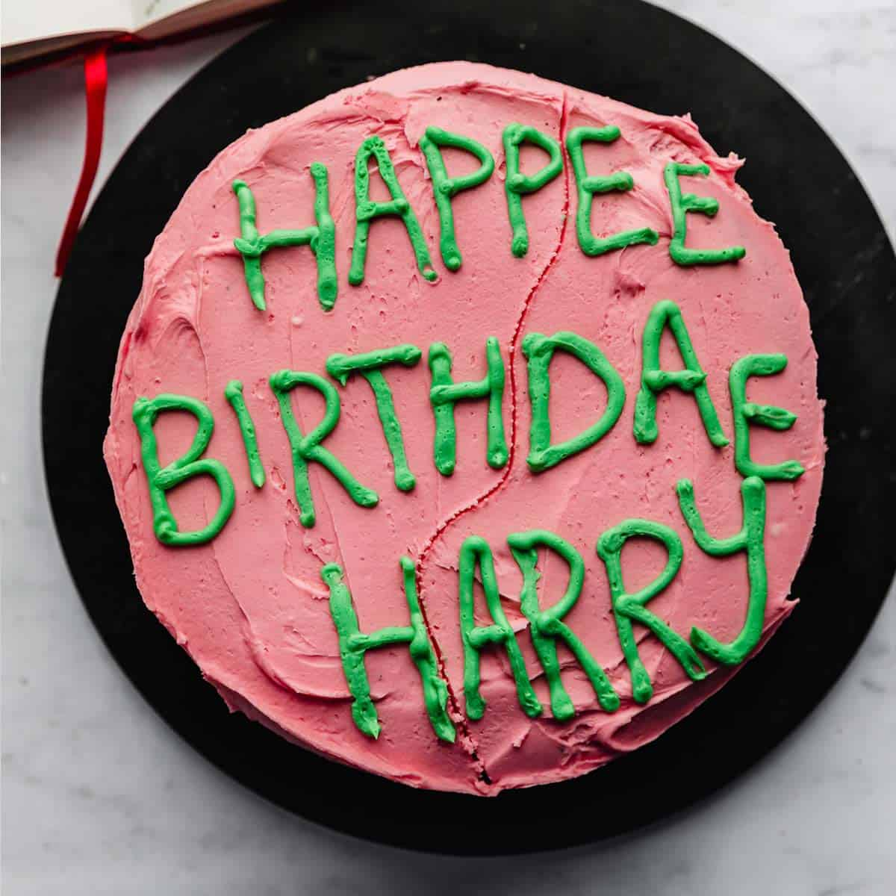

"In the Harry Potter series, Harry's birthday cake is typically described as a traditional
sponge cake, often with chocolate or vanilla flavoring. The cake is typically decorated
with colorful icing or frosting, and may feature Harry's name or other decorations in icing
or fondant. In the first book, "Harry Potter and the Philosopher's Stone," Hagrid brings
Harry a homemade cake with green icing and the words "Happy Birthday Harry" written in pink
icing. In subsequent books and movies, Harry's birthday cake may vary in appearance, but it
is always a festive and special treat to mark the occasion of his birthday."
Ingredients:
- 2 cups all-purpose flour
- 2 cups granulated sugar
- 3/4 cup unsweetened cocoa powder
- 2 teaspoons baking soda
- 1 teaspoon baking powder
- 1/2 teaspoon salt
- 1 cup buttermilk
- 1 cup strong brewed coffee, cooled
- 1/2 cup vegetable oil
- 2 eggs
- 1 teaspoon vanilla extract
- Buttercream frosting
- Food coloring (optional)
- Fondant (optional)
Steps:
- Preheat your oven to 350°F (175°C).
- Grease and flour two 9-inch cake pans.
- In a large mixing bowl, combine the flour, sugar, cocoa powder, baking soda, baking powder, and salt.
- In a separate bowl, whisk together the buttermilk, coffee, vegetable oil, eggs, and vanilla extract.
- Slowly add the wet ingredients to the dry ingredients, mixing until well combined.
- Divide the batter evenly between the two prepared cake pans.
- Bake for 30-35 minutes, or until a toothpick inserted into the center of the cakes comes out clean.
- Allow the cakes to cool completely in their pans.
- While the cakes are cooling, prepare your buttercream frosting.
- Once the cakes are cool, remove them from their pans and place one cake layer on a cake stand or serving platter.
- Spread a layer of frosting on top of the first cake layer, then place the second cake layer on top.
- Frost the entire cake with buttercream frosting, using a spatula to create a smooth finish.
- If desired, add food coloring to the remaining frosting to create your desired colors.
- Use fondant to create decorations such as lightning bolts, wizard hats, or the Hogwarts crest.
- Add your fondant decorations to the top and sides of the cake, using a small amount of frosting to help them stick.
- Serve and enjoy your magical Harry Potter-inspired birthday cake!
Back to the top of the page
Back to the main page
Previous recipe: Polyjuice Potion